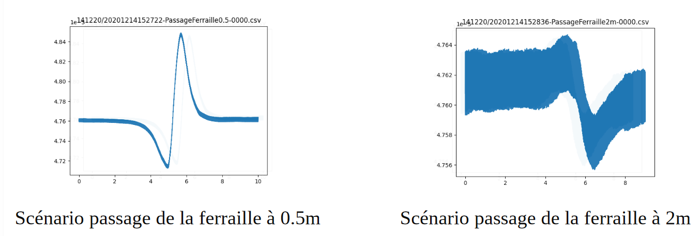
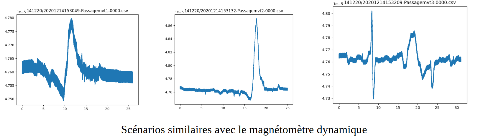
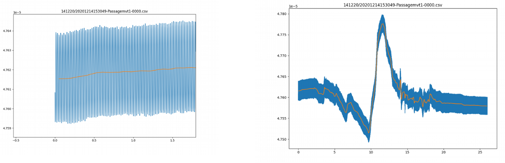
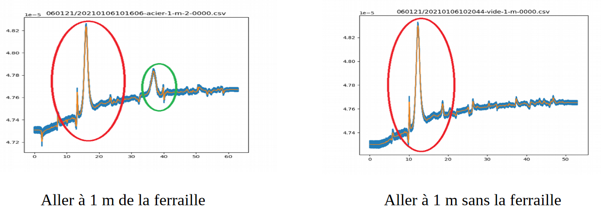

Fait le 16/11/2020
Découverte du magnétomètre
Interfacer le magnétomètre avec Linux : ECHEC, le logiciel semble ne fonctionner que sous Windows
Pour ce projet, nous nous sommes divisés en sous-groupe afin de travailler à la fois sur la partie riptide, capteur magnétique et saturne. Cette page concerne le travail réalisé sur le capteur magnétique. Les membres ayant travaillés sur cette partie sont :
ARCHET Agathe
EVAIN Alexandre
SANCHEZ Robin
Nous avons divisé nos travaux en 3 grandes parties :
Fait le 16/11/2020
Découverte du magnétomètre
Interfacer le magnétomètre avec Linux : ECHEC, le logiciel semble ne fonctionner que sous Windows
Fait le 16/11/2020
Trouver une bibliothèque Python pour simuler le magnétomètre et l’environnement magnétique
Comprendre les principes physiques du magnétomètre
Fait le 25/11/2020
Modification et amélioration de la simulation de survey magnétique réalisée en python (bibliothèque magPyLib). Génération de différentes cartes magnétiques en 2D vue du haut avec des objets positionnés à 1 m de profondeur suivant différentes orientations (déplacement du magnétomètre en boustrophédon). Vérification et comparaison avec les résultats de la semaine dernière (qui semblent concorder).
Fait le 14/12/2020
Tracé et analyse des données de logs du magnétomètre acquises la semaine précédente. Du bruit apparaît sur les graphes, nous décidons de reproduire l’expérience avec des scénarios plus spécifiques pour valider l’hypothèse de détection.
Discussion avec Romain Schwab pour utiliser un câble plus long (des raccords de connectique devront être faits).
Expérience sur le terrain :
Scénario pour acquérir le bruit ambiant
Scénario passage à vide (magnéto statique)
Scénario passage ferraille 0.5/1/2 m (magnéto statique)
Scénario passage pot en fonte 1 m (magnéto statique)
Scénarios similaires avec magnétomètre dynamique (obstacles statiques)
Tracé et analyse des données de logs du magnétomètre. Ré-échantillonnage du timestamp qui était mauvais. Voici quelques figures obtenues (norme globale du champ magnétique en mT) :
On constate une relation entre le bruit des mesures et la distance séparant le magnétomètre de la plaque de ferraille : plus l’objet est proche, plus la détection magnétique est fine.
Ici un bruit dû au déplacement du magnétomètre s’ajoute aux mesures. Néanmoins, les perturbations magnétiques sont assez claires pour identifier le passage juste à côté des objets d’intérêt (la dernière traduit un passage près de la plaque de ferraille, puis du pot en fonte)
Fait le 06/01/2021
Etude de la perturbation retrouvée systématiquement sur les courbes de mesures. On observe effectivement un bruit parasite périodique de 50 Hz correspondant sûrement à la présence de courants alternatifs.
Mise en place d’un filtre à moyenne glissante pour réduire ce bruit :
Les courbes oranges obtenues conservent bien les anomalies magnétiques.
Préparation des expériences en plein air : fixation du magnétomètre, de son digitaliseur et de la batterie sur la luge avec du scotch velcro.
Série de tests sur le stade de l’ENSTA Bretagne avec la luge et le magnétomètre
Un aller linéaire à 1 m de la plaque en fer
Un retour linéaire à 2 m de la plaque en fer.
Un aller linéaire reproduisant la première trajectoire, à vide sans plaque en fer
Des vidéos ont été prises pour identifier la position du magnétomètre lors de ses missions.
Analyse des résultats :
On détecte bien l’anomalie magnétique de la ferraille (cercle vert). Par contre, on détecte une anomalie importante dont l’origine est pour l’instant inconnue (câbles enterrés, ou aimant ?).